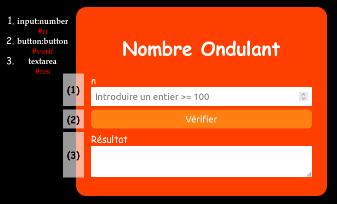
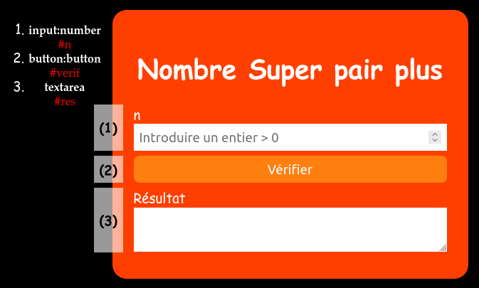
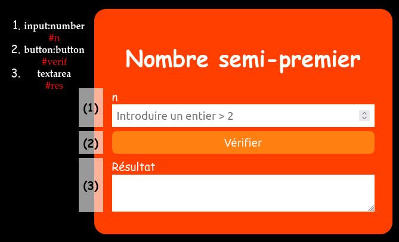
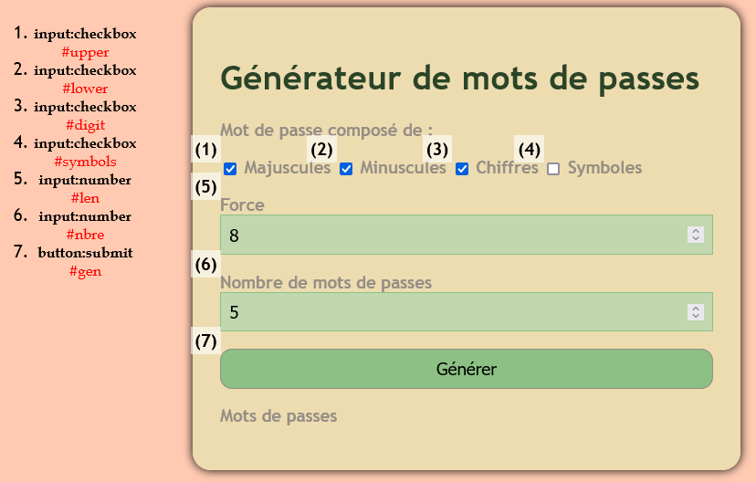

On demande de créer le formulaire suivant à l'aide du langage HTML et de le mettre en forme en CSS :

Formulaire nombre ondulant
Ecrire une fonction estOndulant(n) qui permet de vérifier si l'entier n est ondulant.
Un nombre n est dit ondulant s'il est formé de trois chiffres au minimum et qui est de
la forme
ababab... avec a ≠ b.
Exemples :
101, 2525, 56565 et 1717171 sont des nombres ondulants.
12345 et 808008 ne sont pas des nombres ondulants.
Ecrire une fonction btnVerifClicked qui permet de :
Récupérer l'entier n saisit par l'utilisateur,
Exploiter la fonction estOndulant(n) pour vérifier si n est un nombre
ondulant,
Afficher le résultat dans la zone de texte #res.
Nombre super-pair plus
On demande de créer le formulaire suivant à l'aide du langage HTML et de le mettre en forme en CSS :

Formulaire nombre super-pair plus
Ecrire une fonction estSuperPairPlus(n) qui permet de vérifier si l'entier n est super-pair
plus.
Un nombre N est dit super-pairplus s’il vérifie les trois conditions suivantes :
Condition 1 : N est pair
Condition 2 : N est formé uniquement par des chiffres pairs
Condition 3 : tous les diviseurs de N autres que 1 sont des entiers pairs.
Exemples :
N = 64 est un entier super-pair plus car 64 vérifie les trois conditions :
Condition 1 : 64 est pair
Condition 2 : 64 est formé uniquement par des chiffres pairs (6 et 4)
Condition 3 : les diviseurs de 64 autres que 1 (2, 4, 8, 16, 32 et 64) sont des entiers pairs.
N = 28 n'est pas un entier super-pair plus car une des trois conditions (condition 3)
n'est pas vérifiée : les diviseurs de 28 autre que 1 (2, 4, 7, 14 et 28) ne sont pas
tous des entiers pairs. En effet, 7 est impair.
Ecrire une fonction btnVerifClicked qui permet de :
Récupérer l'entier n saisit par l'utilisateur,
Exploiter la fonction estSuperPairPlus(n) pour vérifier si n est un nombre
super-pair plus,
Afficher le résultat dans la zone de texte #res.
Nombre semi-premier
On demande de créer le formulaire suivant à l'aide du langage HTML et de le mettre en forme en CSS :

Formulaire nombre semi-premier
Ecrire une fonction estPremier(n) qui permet de vérifier si n est un nombre
premier ou non.
Ecrire une fonction estSemiPremier(n) qui permet de vérifier si l'entier n est semi-premier.
Un nombre N est dit semi-premier lorsqu’il est égal au produit de deux nombres premiers non
nécessairement distincts. C’est-à-dire N = k*k avec k est un nombre premier ou N = k*j avec k et j sont
deux nombres premiers.
Exemples :
6 est un nombre semi-premier, car 6 = 2 × 3 avec 2 et 3 sont deux nombres premiers.
25 est un nombre semi-premier, car 25 = 5 × 5 avec 5 est un nombre premier.
831 est un nombre semi-premier, car 831= 3 × 277 avec 3 et 277 sont deux nombres premiers.
8 n’est pas un nombre semi-premier, car 8 = 2 × 4 avec 4 n’est pas un nombre premier.
Ecrire une fonction btnVerifClicked qui permet de :
Récupérer l'entier n saisit par l'utilisateur,
Exploiter la fonction estSemiPremier(n) pour vérifier si n est un nombre
semi-premier,
Afficher le résultat dans la zone de texte #res.
Générateur de mots de passes
On demande de créer le formulaire suivant à l'aide du langage HTML et de le mettre en forme en CSS :

Formulaire générateur de mots de passes
Créer une fonction nommée randint(a, b) qui retourne un nombre aléatoire dans l'intervalle
[a, b], basée sur les deux fonctions prédéfénies en JavaScript :
Math.random() qui renvoie un nombre aléatoire dans l'intervalle [0, 1[.
Math.floor(x) qui permet de supprimer la partie décimale (réelle) d'un nombre.
a et b sont deux entiers.
Créer une fonction genPassword(chars, len) qui retourne une chaine composée de
len caractères sélectionnés au hasard dans une chaine nommée chars.
Créer une fonction genClicked(e) qui permet de :
Récupérer les données du formulaire.
Générer nbre mots de passe de longueur len.
Afficher les mots de passes générés dans un <div> portant l'id #passwords.